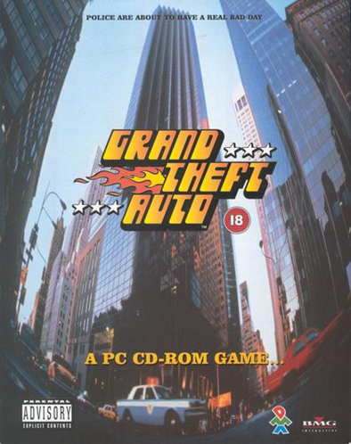

Do nada ao topo… ou ao fundo
Um vigarista, um ex-assaltante de banco e um psicopata se envolvem com o submundo do crime, o governo e a indústria do entretenimento. Para sobreviver em uma cidade implacável, precisam realizar assaltos arriscados sem poder confiar nem mesmo uns nos outros